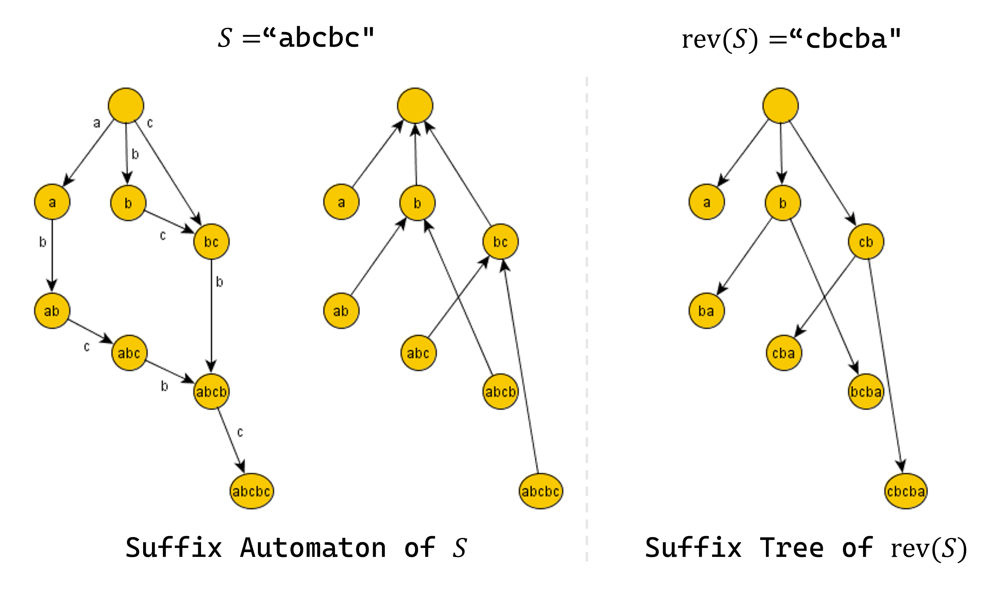

Suffix Automaton¶
문자열 \(S\)의 모든 부분문자열들을 효율적으로 관리하기 위한 자료구조로, suffix array나 suffix tree가 있다. Suffix automaton은 각 간선에 문자가 하나씩 적힌 DAG (Directed Acyclic Graph)를 만들어, DAG 위에서의 임의의 경로가 \(S\)의 부분문자열과 대응되도록 \(S\)의 부분문자열들을 압축하여 표현한 자료구조이다.
Structure¶
Suffix automaton은 DFA (deterministic finite automaton)로, 다음 기본 성질들을 만족한다.
Property 1
- Suffix automaton은 정점 (state)와 간선 (transition)으로 구성된 DAG (Directed Acyclic Graph)이다.
- 정점들 중 하나의 정점은 initial state이며, 모든 다른 정점들은 이 정점으로부터 도달이 가능하다.
- 각 간선(transition)에는 하나의 문자가 적혀 있고, 한 정점에서 나가는 서로 다른 간선들에는 서로 다른 문자가 적혀 있다.
- Initial state에서 시작하여 간선을 따라 이동하는 임의의 경로는 모두 서로 다른 \(S\)의 부분문자열이고, \(S\)의 모든 부분문자열은 임의의 경로에 정확히 한번 등장한다.
- 몇 개의 정점들은 terminal state이며, initial state에서 terminal state로 가는 임의의 경로는 모두 서로 다른 \(S\)의 suffix이고, \(S\)의 모든 suffix는 initial state에서 terminal state로 가는 경로에 정확히 한번 등장한다.
Suffix tree와는 다르게, 각 정점이 하나의 부분문자열을 의미하는 것이 아니라, initial state에서 시작하는 임의의 경로가 하나의 부분문자열을 의미하는 것임에 주의하자. 즉, 한 정점으로 가는 여러 개의 경로가 존재할 수 있으며 모두 서로 다른 부분문자열을 의미한다.
End Position¶
Definition 1
\(endpos(t):=\) \(S\)에서 부분문자열 \(t\)를 모두 찾았을 때 가능한 끝점의 위치의 집합
\(t\)가 빈 문자열인 경우 \(endpos(\phi)=\{ 0, 1, 2, \cdots, |S| \}\), \(t\)가 \(S\)의 부분문자열이 아닌 경우 \(endpos(t)=\phi\)
예를 들어, \(S=\)"abbcdbcbcd", \(t=\)"bcd"일 때 \(S\)에서 \(t\)를 모두 찾으면 "ab[bcd]bc[bcd]"가 되어 끝 위치는 "abbcd|bcbcd|", \(endpos(t)=\{5, 10\}\)이 된다. \(t\)가 빈 문자열일 경우 끝 위치는 모든 칸이 될 수 있으니 "|a|b|b|c|d|b|c|b|c|d|"에서 \(endpos(\phi)=\{ 0, 1, 2, \cdots, 10 \}\)임을 알 수 있다.
Suffix automaton에서 각 정점(state)가 의미하는 것은 바로 이 정점으로 대응되는 모든 부분문자열들의 \(endpos\) 집합이 같다는 것이다.
Property 2
Suffix automaton에서 각 정점(state)로 대응되는 모든 부분문자열들의 \(endpos\) 집합이 같다.
즉, \(endpos\) 집합의 동일성 여부는 equivalence relation이며, suffix automaton에서 각 정점(state)은 이에 대한 equivalence class이다.
다음 관찰들을 통해 \(endpos\) 집합들의 equivalence class가 어떻게 구성되어 있는지 알아보자.
Property 3
\(S\)의 서로 다른 두 부분문자열 \(p\)와 \(q\)가 \(endpos(p)=endpos(q)\), \(len(p) \ge len(q)\)이면 \(q\)는 \(p\)의 suffix이다.
Proof
\(endpos\) 집합이 같으니, \(p\)는 \(endpos\) 집합의 임의의 위치에서부터 왼쪽으로 \(|p|\)만큼 이동하여 얻을 수 있고, \(q\) 또한 그 위치에서부터 왼쪽으로 \(|q|\)만큼 이동하여 얻을 수 있다. 따라서 \(p\)와 \(q\)는 끝점을 공유하고 있는 형태이고, \(q\)는 \(p\)의 suffix이다.
Property 4
\(S\)의 부분문자열 \(p\), \(q\)에 대하여 \(endpos(p)\), \(endpos(q)\)의 관계는 다음과 같다.
- \(q\)가 \(p\)의 suffix : \(endpos(p) \subseteq endpos(q)\)
- otherwise : \(endpos(p) \cap endpos(q) = \phi\)
각 \(endpos\) 집합은 완전한 포함관계거나, 교집합이 비어있는 laminar set family의 형태를 이룬다.
Proof
만약 두 부분문자열 \(p\), \(q\)의 \(endpos(p)\), \(endpos(q)\)가 교집합을 갖는다면 위 Property 3와 같은 논리로 \(p\)와 \(q\)는 서로 suffix 관계이다. \(q\)가 \(p\)의 suffix라면, 모든 \(p\)의 등장 위치에 \(q\)도 등장하니, \(endpos(p) \subseteq endpos(q)\)라는 것을 알 수 있다. 따라서, 모든 \(endpos\)는 완전히 포함되거나, 교집합이 비어있는 laminar set family의 형태를 이룬다.
Property 5
\(S=endpos(p)=endpos(q)\)를 만족하는 최대 길이 부분문자열을 \(p\), 최소 길이 부분문자열을 \(q\)라고 할 때, 길이 \(p\) 이하 \(q\) 이상인 \(p\)의 suffix \(r\) 또한 \(S=endpos(r)\)을 만족한다.
즉, 같은 \(endpos\) 집합을 갖는 부분문자열들의 길이는 하나의 구간을 이루며, 모두 \(endpos\) 집합의 조건을 만족하는 가장 긴 부분문자열 \(p\)의 suffix의 형태이다.
Proof
Property 3에 의해 \(q\)는 \(p\)의 suffix이고, 길이 \(p\) 이하 \(q\) 이상인 \(p\)의 suffix \(r\)은 Property 4에 의해 \(endpos(p) \subseteq endpos(r) \subseteq endpos(q)\)가 성립하여 \(S=endpos(p)=endpos(q)=endpos(r)\), 즉 \(r\) 또한 같은 \(endpos\)를 갖는다. 따라서 같은 \(endpos\) 집합을 갖는 부분문자열들의 길이는 하나의 구간을 이룬다.
\(endpos\) 집합들의 equivalence class의 형태는 Property 5와 같이 정리할 수 있다.
편의를 위해 가장 긴 부분문자열과 가장 짧은 부분문자열을 다음과 같은 형태로 정의하자.
Definition 2
정점 \(v\)에 대응되는 부분문자열들 중 가장 긴 것을 \(longest(v)\), 그 길이를 \(len(v)\),
가장 짧은 것을 \(shortest(v)\), 그 길이를 \(minlen(v)\)라 정의한다.
Suffix Link¶
Definition 3
\(link(v):=\) 정점 \(v\)에 대응되는 부분문자열들 중 가장 긴 것을 \(w\)라 할 때, \(w\)의 suffix 중 다른 \(endpos\) 집합을 갖는 가장 긴 suffix와 대응되는 정점
Initial state의 suffix link는 가상의 \(-1\)번 정점으로 정의한다.
Property 5에서 각 정점에 대응되는 부분문자열들은 가장 긴 부분문자열을 \(w\)라 할 때, 길이 \(|w|, |w|-1, |w|-2, \cdots\)인 \(w\)의 suffix의 형태로 나타난다는 사실을 알 수 있었다. 이렇게 길이를 계속 줄여나가면 어느 순간부터는 \(endpos\) 집합이 바뀌는데, 구체적으로는 suffix의 길이가 줄어들수록 \(endpos\) 집합이 더 커진다. \(endpos\) 집합이 바뀌는 순간 바뀐 정점을 suffix link \(link(v)\)로 표현한다.
Property 6
\(v\)에서 \(link(v)\)로 간선을 이어주면 initial state를 루트로 하는 트리가 된다.
이 트리는 \(endpos\) 집합의 포함관계를 나타내는 트리와 동일하다.
또한, 정의에 의해 다음이 성립한다.
Property 7
다음은 문자열 "abcbc"에 대한 suffix automaton과 suffix link의 예시이다. 각 정점에는 \(longest(v)\)가 적혀 있다.
Algorithm¶
지금까지 정의한 \(endpos\)와 \(link(v)\)를 이용하면 suffix automaton을 구성하는 느린 알고리즘을 구상할 수 있다.
처음에 빈 문자열 \(p=\phi\), \(endpos(p)=\{ 0, 1, 2, \cdots, |S| \}\)인 상태로 initial state에서 시작한다.
이후, \(endpos\)위치 다음에 올 수 있는 문자들이 이 정점에서 나가는 간선들에 적히게 된다.
각 문자 \(c\)에 대해, 새로운 부분문자열 \(p'=p+c\), 새로운 \(endpos(p')=\) \(endpos(p)\)의 끝에 문자 \(c\)를 붙였을 때 바뀌는 \(endpos\)로 정의한다.
같은 \(endpos\) 집합을 갖는 정점은 한 정점으로 묶어주면 suffix automaton은 완성된다.
완성된 DAG에서 정점 \(v\)로 가는 최장경로가 \(longest(v)\), 최단경로가 \(shortest(v)\)를 의미하고, 이 정보를 이용하여 \(shortest(v)\)의 가장 앞 문자를 제거한 부분문자열을 \(longest(w)\)로 갖는 정점 \(w\)로 \(link(v)\)를 이어주면 된다.
물론, 위 방법은 시간이 느린 비효율적인 알고리즘이다. Suffix automaton을 구하는 효율적인 알고리즘은 빈 문자열에서부터 시작하여 문자를 하나씩 추가해 나가는 incremental한 알고리즘의 형태이다.
처음에는 빈 문자열에서 시작하여 그래프에는 initial state \(t_0\)만 존재하고, \(len(t_0)=0\), \(link(t_0)=-1\)이다. 여기서 새로운 문자 \(c\)를 추가했을 때 그래프가 어떻게 변할지 생각해보자. \(c\)를 추가하기 직전 문자열 전체에 대응되던 정점을 \(last\)라 하고, 새로운 정점 \(cur\)을 만들어 이 정점을 \(c\)를 추가한 이후 전체 문자열에 대응되는 정점이라 하자. 자연스럽게 \(len(cur)=len(last)+1\)이 된다.
\(cur\)로 간선 \(c\)를 이용하여 연결되는 정점들은, \(c\)를 추가하기 전 전체 문자열의 suffix를 의미하는 정점들이니, \(v=last\)에서 시작하여 \(link(v)\)를 타고 올라가면서 구할 수 있다.
(Case 1) 만약, \(v\)에서 나가는 문자 \(c\)의 간선이 없다면, 이 문자열이 지금까지는 등장한 적이 없다는 뜻이니 바로 \(v\)에서 \(cur\)로 문자 \(c\)의 간선을 이어주면 된다. 이 과정을 \(v\)에서 나가는 문자 \(c\)의 간선이 이미 존재할 때까지 \(link(v)\)를 타고 올라가면서 반복한다. 만약 이 과정을 반복하다가 initial state \(t_0\)에 도착하면 \(cur\)이 모든 suffix에 다 대응되니, 알고리즘을 종료하고 \(link(cur)=t_0\)로 설정해주면 된다.
이제 \(v\)에서 나가는 문자 \(c\)의 간선이 이미 있는 경우를 생각하자. 편의를 위해 현재 정점 \(v\)를 \(p\), 문자 \(c\)의 간선을 타고 이동한 정점을 \(q\)라 하자. 현재 상황을 정리하자면, 이미 \(cur\)에는 길이 \(len(p)+1\) (suffix=\(longest(p)+c\)) 초과의 suffix들은 대응이 되어 있고, 정확히 \(len(p)+1\) 이하의 suffix들을 대응시켜야 한다. 하지만 만약 \(len(q)>len(p)+1\)라면 \(q\)에는 대응시켜야할 suffix보다 더 긴 부분문자열들도 포함하고 있어, \(len(q)=len(p)+1\)과 \(len(q)>len(p)+1\)인 경우로 case를 나누어서 생각해야 한다.
(Case 2) 만약 \(len(p)+1=len(q)\)라면, \(q\)가 우리가 대응시켜야 할 정확한 상태이다. \(q\)의 \(endpos\) 집합에 마지막 인덱스가 추가되는 형태이니, 그래프에서 바꿔야 할 것은 이제 없고 \(link(cur)=q\)로 설정해주면 된다.

(Case 3) 만약 \(len(p)+1<len(q)\)라면 우리가 대응시켜야 할 상태는 아직 그래프에 존재하지 않는다.
\(q\)의 \(endpos\) 집합은 길이가 \(len(q)\)인 부분문자열에 대응되지만, 마지막 인덱스를 포함하는 \(endpos\)는 길이가 \(len(p)+1\)이니 \(q\)와는 \(endpos\) 집합이 다르다.
따라서, \(q\)를 길이 \(len(p)+1\)를 갖는 새로운 정점 \(clone\)으로 쪼개자.
\(len(clone)=len(p)+1\)이 되고, 자연스럽게 \(endpos(q) \subseteq endpos(clone)\)가 된다.
\(link(clone)\)은 원래 \(link(q)\)가 가리키던 정점이 되고, \(link(q)\)는 \(clone\)이 된다.
또한, \(q\)에서 나가는 간선들을 모두 \(clone\)에서도 나갈 수 있도록 이어주고, \(link(cur)=clone\)으로 설정해주면 된다.
마지막으로 \(q\)로 들어오던 일부 간선들을 \(clone\)으로 바꾸어줘야 하는데, \(p\)의 suffix들에서 \(c\)의 간선을 타고 이동하면 \(q\)로 오는 간선들을 \(clone\)으로 옮겨주면 된다.
이는 \(v=p\)에서부터 \(link(v)\)를 타고 이동하며 \(v\)에서 간선 \(c\)를 타고 이동하였을 때 \(q\)가 아닌 정점으로 이동하기 전까지 간선을 \(q\)에서 \(clone\)으로 바꾸어준다.

마지막으로, 모든 문자를 추가한 후 \(last\)에서 suffix link를 타고 올라가면서 terminal state들을 모두 구할 수 있다.
Algorithm 1
처음에, 빈 문자열에서 시작하여 그래프에는 initial state \(t_0\)만 존재하고, \(link(t_0)=-1\)이다.
이제, 새로운 문자 \(c\)를 추가할 때 다음을 실행한다.
\(c\)를 추가하기 직전 문자열 전체에 대응되던 정점을 \(last\)라 하고, 새로운 정점 \(cur\)을 만들어 \(len(cur)=len(last)+1\)이라 한다.
\(v=last\)에서 시작하여 \(v\)에서 나가는 문자 \(c\)의 간선이 존재하기 전까지 \(link(v)\)를 타고 올라가며,
(Case 1) \(v\)에서 \(cur\)로 문자 \(c\)의 간선을 이어준다.
만약 이 과정을 반복하다가 initial state \(t_0\)에 도착하면 \(link(cur)=t_0\)로 설정해주고 알고리즘을 종료한다.
\(v\)에서 문자 \(c\)의 간선이 이미 있는 경우, 현재 정점 \(v\)를 \(p\), 문자 \(c\)의 간선을 타고 이동한 정점을 \(q\)라 하자.
(Case 2) \(len(p)+1=len(q)\)라면 \(link(cur)=q\)로 설정해주고 알고리즘을 종료한다.
(Case 3) \(len(p)+1<len(q)\)라면 \(q\)를 길이 \(len(p)+1\)를 갖는 새로운 정점 \(clone\)으로 쪼개고, \(q\)에서 나가는 간선들을 복사하여 \(clone\)에서도 나갈 수 있도록 이어준다. \(link(clone)\)은 원래 \(link(q)\)가 가리키던 정점으로, \(link(q)\)는 \(clone\)으로, \(link(clone)=cur\)으로 설정해준다. \(q\)로 들어오던 일부 간선들을 \(clone\)으로 바꾸어주기 위하여 \(v=p\)에서부터 \(link(v)\)를 타고 이동하며 \(v\)에서 간선 \(c\)를 타고 이동하였을 때 \(q\)가 아닌 정점으로 이동하기 전까지 간선을 \(q\)에서 \(clone\)으로 바꾸어준다.
모든 문자를 추가한 후 \(last\)에서 suffix link를 타고 올라가면서 terminal state들을 모두 구할 수 있다.
Complexity¶
Property 8
길이 \(N\)의 문자열의 suffix automaton의 정점(state)의 최대 개수는 \(2N-1\)개이다.
Proof
Algorithm 1에서 문자를 \(2\)개 추가할 때까지는 각각 \(1\)개의 정점만이 생성되고, 그 이후는 한 문자를 추가할 때마다 최대 \(2\)개 (\(cur\), \(clone\))이니, 길이 \(N\)의 suffix automaton의 정점의 개수는 최대 \(2N-1\)개이다.
또한, Property 4에 의해 \(endpos\) 집합은 tree의 형태로 표현할 수 있고, 정점의 개수는 서로 다른 \(endpos\) 집합의 개수와 같다. 이 트리의 리프는 \(\{ 1, 2, \cdots, N \}\)의 disjoint한 부분집합들로, 최대 \(N\)개 가능하니 트리의 노드의 수는 최대 \(2N-1\)개이다.
위 형태의 문자열이 실제로 \(2N-1\)개의 정점을 만든다는 것을 알 수 있다.
Property 9
길이 \(N\)의 문자열의 suffix automaton의 간선(transition)의 최대 개수는 \(3N-4\)개이다.
Proof
우선 문자 \(c\)인 간선 \((p, q)\)에 대하여 \(len(p)+1=len(q)\)인 간선들의 개수를 먼저 세자. Suffix automaton에서 이 간선들만 이용하면 longest path를 구할 수 있고, longest path spanning tree에 사용되는 간선의 개수는 최대 \(V-1\)개, 즉 \(2N-2\)개이다.
\(len(p)+1<len(q)\)인 간선에 대해, \(u=longest(p)\)를 initial state에서 \(p\)로 가는 최장경로 문자열, \(v\)를 \(q\)에서 임의의 terminal state로 가는 최장경로 문자열로 정의하자. 정의에 의해 \(u+c+v\)는 \(S\)의 suffix이고, 이 문자열은 longest path spanning tree 위의 간선들만 사용하니, 모두 다르다. 하지만 서로 다른 suffix는 최대 \(N-1\)개 밖에 없으니, 이러한 형태의 간선은 최대 \(N-1\)개밖에 없다.
따라서 전체 간선의 개수는 최대 \(3N-3\)개 이하이고, 정점의 개수를 최대화하는 예시에서 간선이 최대 \(3N-4\)개 밖에 못 만드니, 전체 간선의 최대 개수는 \(3N-4\)개이다.
위 형태의 문자열이 실제로 \(3N-4\)개의 정점을 만든다는 것을 알 수 있다.
위와 같이 정점과 간선의 최대 개수가 모두 \(O(N)\)개이다. 따라서 Algorithm 1에서 정점의 생성, 새로운 간선의 생성은 총 \(O(N)\)개밖에 발생하지 않는다. 간선을 새롭게 생성하지는 않지만 연산을 실행하는 부분은 \(clone\)을 만든 후 원래 \(q\)로 향하던 일부 간선들을 \(clone\)으로 옮기는 부분이다. 하지만 이 과정 또한 \(O(N)\)번 실행됨을 증명할 수 있고, 따라서 전체 시간복잡도는 \(O(N)\)이다.
이 시간복잡도는 알파벳의 개수 \(\Sigma\)를 상수로 취급하여, 각 정점에서 나가는 간선들을 크기 \(\Sigma\)의 배열에 저장하였을 때의 시간복잡도이다.
Complexity
Time Complexity : \(O(N)\)
Space Complexity : \(O(N\Sigma)\)
간선을 map과 같은 자료구조에 저장하면 알파벳의 개수 \(\Sigma\)가 상수가 아닐 때에도 시간복잡도 \(O(Nlog\Sigma)\)로 해결할 수 있다.
Complexity
Time Complexity : \(O(Nlog\Sigma)\)
Space Complexity : \(O(N)\)
Suffix Tree¶
글의 처음에 언급했듯이, suffix automaton 외에도 suffix array나 suffix tree 등 부분문자열들을 효율적으로 관리할 수 있는 자료구조들이 있다. Suffix automaton을 활용하면 suffix tree를 Ukkonen's Algorithm이나 suffix array를 활용하여 구하는 것보다 더 쉽고 빠르게 구할 수 있다.
Suffix tree를 다시 엄밀하게 정의하자.
Definition 4
Suffix trie는 trie에 \(S\)의 모든 suffix를 삽입한 자료구조이다.
Suffix tree는 suffix trie에서 자식 간선이 \(1\)개 밖에 없는 정점의 부모 간선과 자식 간선을 합쳐 압축한 트리이다. 따라서 suffix tree의 모든 노드는 리프이거나, 자식이 \(2\)개 이상이다.
Suffix automaton에서 각 정점 \(v\)에 대해 대응되는 최대 길이의 문자열 \(longest(v)\)는 다음을 만족한다. \(longest(v)\)의 앞쪽에 하나의 문자를 추가하면 \(endpos\) 집합이 \(endpos(v)\)와는 달라야 하기 때문에, \(S\)에서 \(longest(v)\)를 모두 찾으면 그 앞에는 \(0\)개, 혹은 \(2\)개 이상의 종류의 문자가 존재해야 한다. 하지만 이 성질은 \(rev(S)\)의 suffix tree에서 suffix tree에 존재하는 노드 \(u\)가 \(0\)개, 혹은 \(2\)개 이상의 자식 노드를 갖는다는 것과 완전히 동치이다. 따라서 Suffix automaton에서 각 정점 \(v\)에 대해 \(longest(v)\)를 뒤집은 문자열 \(rev(longest(v))\)은 \(rev(S)\)의 suffix tree에 존재하며, 일대일 대응됨을 알 수 있다.
Property 10
Suffix automaton에서 각 정점 \(v\)에 대해, \(S\)에서 \(longest(v)\)를 찾았을 때 앞에 추가할 수 있는 문자의 종류는 \(0\)개, 혹은 \(2\)개 이상이다.
\(rev(S)\)의 suffix tree에서 suffix tree에 존재하는 각 노드 \(u\)는 \(0\)개, 혹은 \(2\)개 이상의 자식 노드를 갖고, 이는 \(rev(S)\)에서 \(u\)에 대응되는 부분문자열을 찾았을 때 뒤에 추가할 수 있는 문자의 종류는 \(0\)개, 혹은 \(2\)개 이상임을 의미한다.
위 두 성질은 suffix automaton에서 각 정점 \(v\)에 대해 \(longest(v)\)를 뒤집은 문자열 \(rev(longest(v))\)과 대응되는 정점 \(u\)가 \(rev(S)\)의 suffix tree에 존재함을 의미하며, suffix automaton의 정점 \(v\)와 suffix tree의 정점 \(u\)가 일대일 대응됨을 의미한다.
따라서, 문자열 \(S\)의 suffix automaton의 suffix link를 이어 연결한 tree는 \(S\)를 뒤집은 문자열 \(rev(S)\)의 suffix tree와 일치한다.
Property 11
문자열 \(S\)의 suffix automaton의 suffix link를 이어 연결한 tree는 \(S\)를 뒤집은 문자열 \(rev(S)\)의 suffix tree와 일치한다.
구체적으로, suffix automaton에서 각 정점 \(v\)에 대응되는 부분문자열 \(longest(v)\)는 \(rev(S)\)의 suffix tree에서 \(rev(longest(v))\)를 의미한다.
